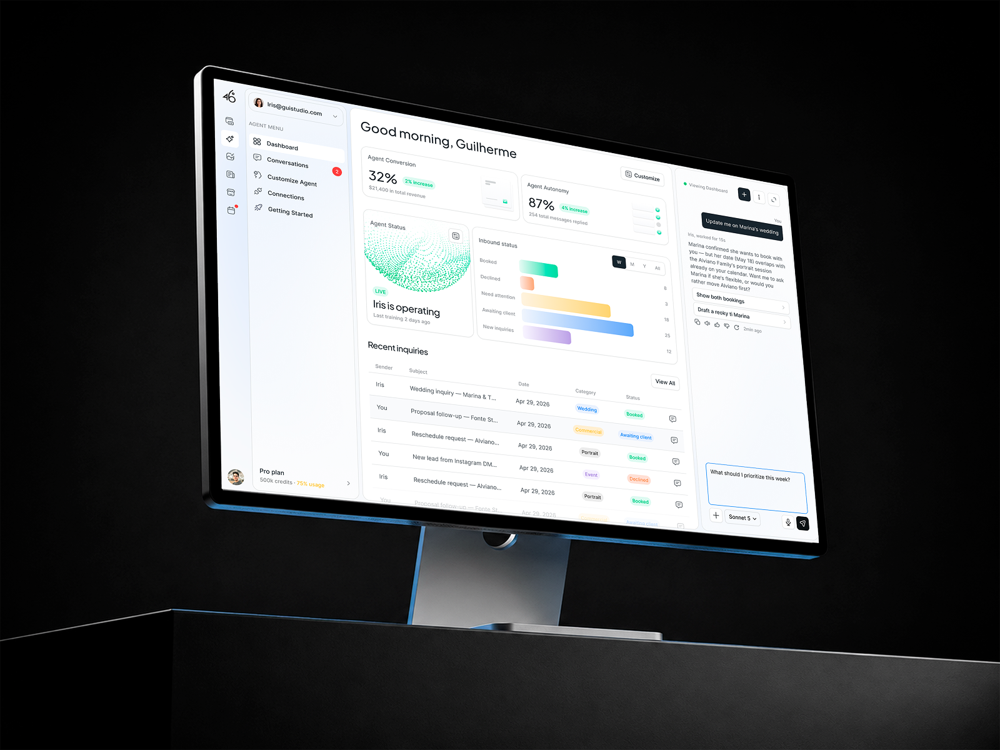
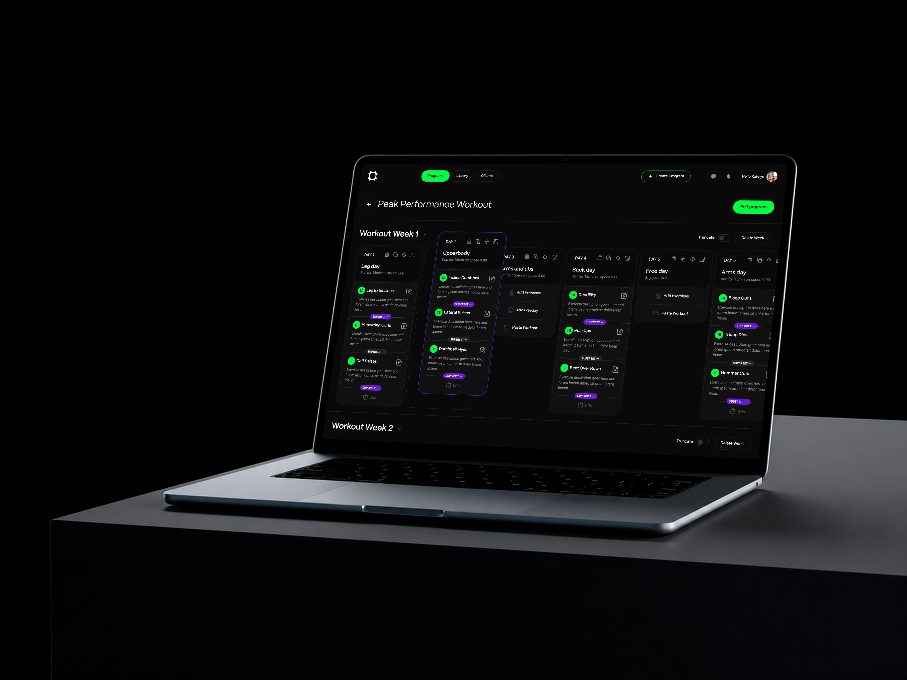
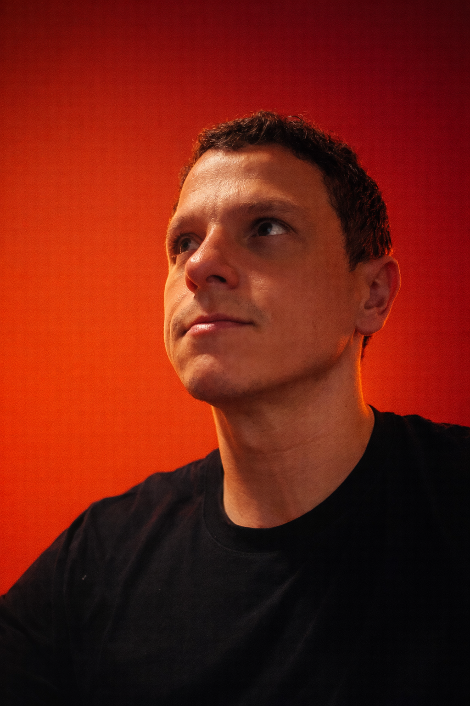

AI Photographers Assistant
- Onboarding TTV
- -35%
- Agent autonomy
- 22% → 61%
- Admin work saved
- ~5 hrs/week
Hi, I’m Guilherme




Every project starts with understanding the problem. I run stakeholder interviews and user interviews to uncover business and user goals, and complement them with benchmark research and heuristic evaluations of the current experience. Through research synthesis and affinity mapping, I turn findings into customer journey maps and Jobs-to-be-Done that define the product structure and the minimum requirements to make it viable.

I skip low-fidelity wireframes and go from user flows and information architecture straight into AI rapid prototyping. After running design sprints and ideation workshops with the team, I explore in parallel: Claude Code and Figma Make vibe code a version from my prompt while I design from a blank frame in Figma. I validate the strongest direction through usability testing and A/B testing, and keep it moving with rapid iteration.

Finally, I refine the visual and interaction design, down to the microinteractions, across responsive and multi-platform layouts. I deliver and maintain a design system built on design tokens and Figma variables, plus an HTML file wired to the Claude Code prototype. Both stay in sync as the source of truth. Every handoff includes an accessibility check for WCAG 2.2 compliance, followed by design QA during implementation.

Open to freelance projects, full-time positions, and creative collaborations. If you have a product problem that needs attention, let’s talk.